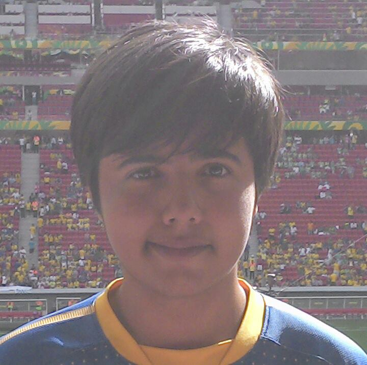
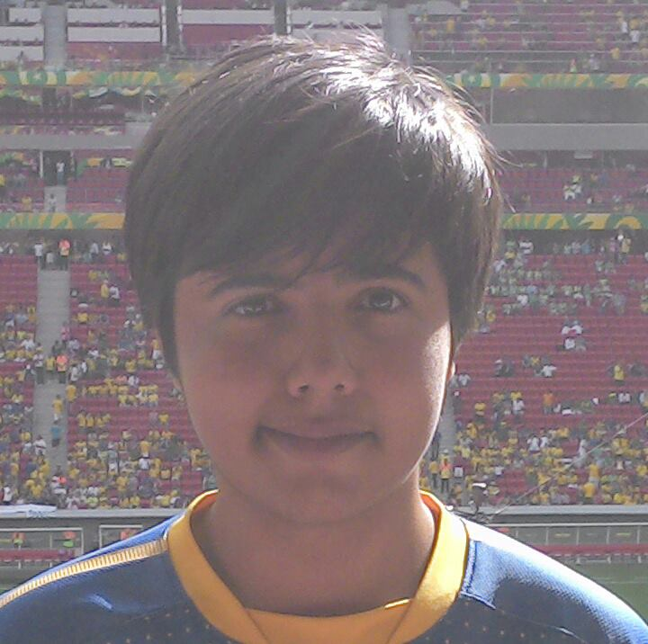

Saleh Kader
 

Olá, sou presidente organizacional da orc'estra, e gamificaçao para mim é uma forma diferente de fazer as coisas. Um jeito de provocar mudanças, utilizando conceitos que estão dentro dos jogos, mas que muitas vezes também estão dentro da nossa realidade só que nunca percebemos por não enxergarmos o nosso contexto. E nosso caso Orc'estra, é fazer isso querendo tirar o melhor de cada pessoa, buscando alterar a sua rotina inerte de mudança, transformando em algo mais lúdico e feliz .